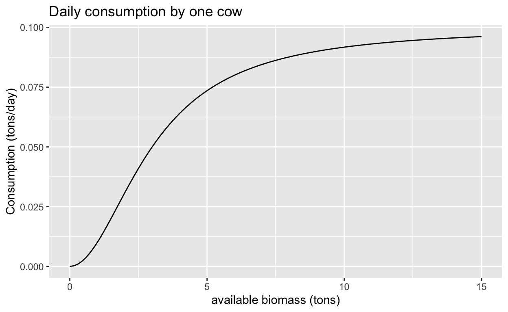
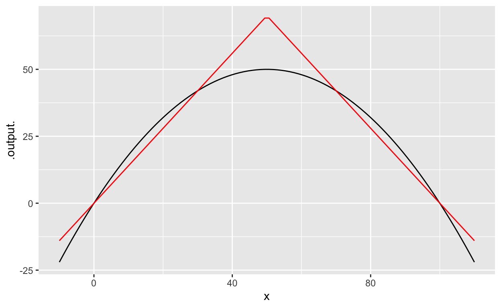

Objectives
- Be able to solve qualitatively any 1-D differential equation.
- Be able to solve quantitatively the linear 1-D differential equation.
An ecosystem
In a previous problem, we examined a standard model of limited growth, the “logistic model.” In this problem, we’re going to build a somewhat more complicated model of an ecosystem, based on the logistic growth model for grass.
To turn a field of growing grass into an ecosystem, we’re going to add grazing cows to the field. A grazing cow has an impact on a field. To simplify, consider a single cow. She eats until she’s full, then takes time off to chew the cud with other cows and ruminate on the day’s events. But, if grass is very scarce, she may not be able to consume all that she would otherwise eat. She’ll be a hungry, ill-fed cow.
When building a model, start by thinking what you want to use the model for. Here, we’ll imagine that we’re interested in sustainability, that is, whether the cow/grass ecosystem is stable. And, since cows are raised for a purpose, we’d like to use the model to find out whether the cow would be well fed and how things would change if another cow were added to the field. Sustainability is a question about dynamics. Here, the system would be sustainable if the field produces more grass in a day than the cow (and her herd-mates if any) consumes consumes in a day.
We’ll model a cow’s consumption as a sigmoidal function consumption(v) of the amount of grass (v – for “vegetation”) available. Like this:

The cow’s consumption is one part of the dynamics. If there were no grass growing, the dynamics would be \[\partial_t G(v) = - H \times \mbox{consumption}(v)\] where \(H\) is the number of cows in the herd.
A more complete model will take into account the intrinsic growth of the grass when there are no cows. As in the previous exercise, we’ll use a logistic model with a carrying capacity of 25 tons of grass in the field. Subtracting daily consumption from daily growth of grass gives the rate of change of the biomass of grass.
Grazing Cows
The graph can be made to display any of three functions:
- The intrinsic logistic model growth dynamics with no cows.
- The total consumption by the herd of cows.
- The net growth, which is the difference between (1) and (2).
In the following, we’ll define a “well-fed cow” as a cow who eats at least 90% of what she would eat in ideal circumstances. A “starving” cow eats at most 50% of what she would eat in ideal circumstances.
Balanced sides
We’re writing the 1-D differential equation as \(\dot{x} = f(x)\). Remember that every possible 1-D differential equation can be written this way. The thing that distinguishes one equation from another is the dynamics function \(f()\).
We have examined a few possibilities for \(f()\), for instance:
- \(f(x) = a x\) – the linear function: \(f(x)\) is proportional to \(x\).
- \(f(x) = a x + b\) – the straight-line function
- \(f(x) = r x (1-x/K)\) – the so-called “logistic” function
There are other forms of \(f()\) that a modeler occasionally encounters, such as
- \(f(x) = a x^2\), or
- \(f(x) = a \sqrt{\strut x}\)
- … and many others!
But (i), (ii), and (iii) are by far the most common, so we focus on them.
Each of (i), (ii), and (iii) has a solution in terms of the basic modeling functions we have used throughout CalcZ: sinusoid, sigmoidal, exponential, and so on. These solutions have been known for at least 200 years. This means that an operational ability to solve a differential equation is a matter of memorizing those solutions.
Our goal in this section is to help you understand in general the logic of finding solutions to differential equations. To find a solution means finding a function \(x(t)\) that satifies
\(\dot{x(t)}\) \(=\) \(f(x(t))\)
There are multiple strategies for finding that function \(x\). An important one of which is to make a guess about the function form (e.g. sinusoid, exponential, etc.) then varying the parameters of that function until the function on the left side matches the function on the right side.
Reminder:
Following convention, we simplify the notation by leaving out any explicit mention of \(t\).
\(\dot{x}\) \(=\) \(f(x)\)
The role of \(t\) in the differentiation is made implicit by the dot on the \(x\). It’s so, so easy to forget this and become confused. So be careful to be attentive to the dot in \(\dot{x}\) as signalling the derivative of \(x(t)\) with respect to \(t\).
An ansatz is a guess for a form of \(x(t)\) that might balance the left and right sides of the differential equation.
To help you form an intuition for the ansatz style of solving differential equations, we provide you with an interactive app:
As usual, click on the picture of the app to open it in another browser tab, then arrange this tab and that to be side by side on your screen.
In this app, all you are going to do is search for a solution to the simple, 1-D differential equation:
\[\dot{x} = a x\]
In the exercises that follow, we are going to specify a numerical value for \(a\) (You’ll have to set \(a\) to the specified value using the little selector underneath the equation in the left-hand panel of the app).
You may have already memorized the solution to this differential equation. But for now, let’s pretend that you have not and that you are going to find a solution by the ansatz method.
The equipment you have to aid in your search is:
- A selector for the form of ansatz (e.g. sinusoidal, exponential, etc.). Note that each form has one or two parameters.
- A slider control for each of the parameters in (1).
The action plays out this way:
- Pick one of the ansatze on offer. The exercises will tell you which one to use. There is no guarantee that the one we tell you to use will provide a successful solution. That might seem mean, but we want you to be able to tell when a proposed solution doesn’t work out.
- Gradually move the parameter slider(s). This will change the shape of the candidate function shown in blue in the top graph.
- Observe the two functions shown in the bottom graph.
- The red function is simply the time derivative of the blue function in the top graph. That is, the red function is what goes on the left-hand side of the differential equation.
- The green function is \(a x\), that is, the right side of the differential equation.
- To satisfy the differential equation, the left and the right sides must be the same function. You can easily see if this is the case when the red and green functions lie exactly on top of one another.
It might be that no matter how you set the parameters, you cannot get the red and green functions to align. This signals that the ansatz being used is not appropriate for this differential equation.
Limited growth solutions
In this section we’ll return to exploring finding a solution to a differential equation by searching for a viable ansatz. Previously, we looked at the differential equation \(\dot{x} = a x\). Now we’ll change the dynamical function to
\(\dot{x}\) \(=\) \(r\, x(1-x)\)
This is the logistic system, but we’ve simplified the searching a bit by making the carrying capacity \(K=1\).
You’re going to use a slightly different app than the one you had for \(\dot{x} = a x\). Here, use

As usual, click on the picture of the app to open it in another browser tab, then arrange this tab and that to be side by side on your screen.
Since you already have experience searching for matches between the red and green functions, we’ll handle this quickly.
We’re going to work with \(r\) only in the correct range from the previous question. So pick one such \(r\) and then find values for the parameters that lead to a balance between the red and green functions. (For reasons we’ll explain later, success will be signalled by the message “Close enough.”)
Why isn’t there an exact line-up between the red and green functions?
There’s universal agreement about what a sine or cosine or exponential or log or power-law function is. In contrast, the sigmoidal/hump functions do not have unique, agreed-upon forms that are used in all situations. Although all sigmoids are S-shaped and all humps are U-shaped, different fields prefer different exact shapes of hump functions and, consequently, the corresponding sigmoid. (Remember, the hump is the derivative of the sigmoid.)
The shape we have been using in CalcZ reflects the choice made in statistics and generally in physics and engineering. It also has two parameters, center and width whose meaning is easy to understand.
The differential equation \(\dot{x} = r\, x (1-x/K)\) has a solution that is sigmoidal, but it is not precisely the form of sigmoid most used in statistics, physics, and engineering. That’s why the red and green functions can’t be made to match exactly. We could make the match exact if we provided the other form of sigmoid or if we tweaked the differential equation a bit. You wouldn’t notice either of these changes, except that the red and blue curves would match precisely.
Keep in mind that the differential equation \(\dot{x} = r\, x (1-x/K)\) is meant to be a model of some situation. Using it is aligned with the calculus strategy of building models from low-order polynomial approximations. (This one is a quadratic.) Similarly, our choice of standard sigmoid is an approximation to the general idea of a sigmoid. The use of an approximation to the idea of sigmoid and an approximation to model real-world dynamics of limited growth, leads in this case to a slight mis-match between our solution and the differential equation. Think of it as round-off error. But for any precise form of the differential equation (which in the spirit of modeling would be arbitrary) there is a correspondingly precise form for the solution.
Numerical soln’s with R
We have suggested a simple model for limited growth: \[\dot{x} = r\,x\,(1-x/K)\] where \(K\) is the “carrying capacity” of the environment in which the growth occurs. Given a graph of the dynamics function (\((x) = r x (1-x)\), you should at this point be able to locate the values \(x^\star\) of any fixed points and determine at a glance whether they are stable.
But sometimes you need more information about how the shape of the solution, that is \(x(t)\) versus \(t\). Currently, we have a formula for the solution of only one form of differential equation: \[\dot{x} = a x \ \ \ \implies \ \ \ x(t) = x(0) e^{a t}\] This is an important solution since it describes all dynamics near fixed points. But what if we are interested in transient behavior far from a fixed point?
A valuable tool is “numerical integration” of differential equations. You’ve see how this works in the app used in DD-19:

In this section, we’ll work to generate solutions in the form of R functions that can be used like any other R function. The central operator is integrateODE(), which, given the dynamical function in \(\dot{x} = \mbox{dynamics}(x)\) an initial condition \(x(0)\), and the numerical values of any parameters, produces the solution.
For example the code in the sandbox generates a solution to \(\dot{x} = a x\). Once we have that solution, we can do the usual things with it: graphing, finding zeros, differentiating, etc.
soln <- integrateODE(dx ~ a * x, a = -1, x = 10, tdur = 10)
# The solution function is called 'soln$x()`. See bottom of section for details.
slice_plot(soln$x(t) ~ t, domain(t = c(0, 10)))
x_dot <- D(soln$x(t) ~ t)
slice_plot(x_dot(t) ~ t, domain(t = c(0, 10)))As you recall, the standard model for limited growth is \[\dot{x} = r\, x (1-x/K)\] Modify the code in the sandbox to find the solution to this model, using \(K=100\), \(r=1\), and \(x(0) = 10\).
What are the arguments to integrateODE() and what is the result of the integration?
- The dynamical function, written as a tilde expression. But this is a slightly different sort of thing than you’re used to with
makeFun(). InmakeFun()you might writesin(3 * x) ~ xfor the tilde expression. But inintegrateODE()the left-hand side of the tilde expression simply names the variable in the differential equation. Since the variable in this example isx, the left-hand side is the differentialdx. The right-hand side of the tilde expression is, inintegrateODE(), the mathematical formula for the dynamics function written in R notation. - Arguments such as
a = -1, or \(r=1\) or \(K=100\) set numerical values for the parameters in the dynamical function. x = 10orx = 200sets the initial condition.tdur = 10the domain in time for which we want the solution calculated: it will go from \(0 \leq t \leq \mbox{tdur}\). Here, it’s set to a reasonable value for the dynamics being studied.
By rights, the object returned by integrateODE() ought to be the function that solves the differential equation for the given parameters and initial condition. That’s almost the case. But we will use integrateODE() for 2-D and higher-dimensional equations, just as we used it for 1-D equations in this section. Consequently, integrateODE() is arranged to return a list of functions. Each element of that list has a name. In the example here, there is only one element to the list (since the dynamics are 1-dimensional). The name of that element is x. The R expression soln$x refers to that element; soln$x is a function but soln is a list. The $ is one of the ways of referring to a particular element of a list in R.
Generic behavior
From the early days of CalcZ, we’ve emphasized the use of approximations. There’s a temptation to contrast “approximation” with “true.” That can be strongly misleading. For example, almost always a beautiful analytic form for a model is selected because it makes working with the model more tractable using the techniques at hand. For almost all the 350 years since calculus was introduced, the most powerful techniques involved algebra, so models were built using functions for which algebra could be used to calculate integrals, find zeros, etc. But the reality behind the model, the reality that the model attempts to capture in some way, often is not expected to match the functions for which algebra is a viable technique.
To illustrate, consider the logistic model of limited growth. This is almost always presented as a quadratic dynamical function: \[\underbrace{\dot{x}}_\mbox{rate of change} = \underbrace{r x (1-x/K)}_\mbox{dynamical function} \equiv \underbrace{g(x)}_\mbox{giving the function a name}\] where \(r\) is a growth rate and \(K\), the carrying capacity, is the largest sustainable level of the quantity \(x\). (We’ve assigned the name \(g()\) to the dynamical function)
You should be able easily to see that the dynamical function has fixed points at \(x=0\) and at \(x=K\). We assess the stability of each of those fixed points by looking at the derivative with respect to \(x\) of the dynamical function at the fixed point.
\[\partial_x g(x) = r\,(1 - 2 x /K)\] When \(x=0\), \(\partial_x\,g(x) = r\), so for small \(x\) the model produces exponential growth \(e^{rt}\).
When \(x=K\), \(\partial_x\,g(x) = -r\), giving exponential decay \(e^{-rt}\).
Let’s put that in context to see if it really makes sense. For example, exponential growth is often an appropriate model for bacterial or fungal growth, e.g. E. coli growing in a bio-reactor that has just been innoculated. Presumably, the exponential growth rate depends on the uptake of nutrients through the cell membrane, the time taken for molecular processes such as DNA replication, the time needed to organize a cell division, and the growth of the daughter cells until they can build up enough internal substance to divide again.
Near the carrying capacity, things are different. A build-up of waste products might interfere with nutrient uptake or transport of waste to the outside of the cell membrane. There might arise some predator or phage that kills or injures cells.
There’s no particular reason to suppose that the rate of population growth and population decay should be the same at small \(x\) as at the carrying capacity \(K\). Yet the quadratic dynamical function used in logistic growth mandates that those two rates be exactly the same.
We use the dynamic function \(r\, x (1-x/K)\) because we like to use low-order polynomials as modeling functions. But we could use something else. For example, the piecewise_fun() is a roughly similar shape:

Code-reading questions
You’re at the point in CalcZ where you should be able to make sense of most of the code we’re reading. So, some basic questions (which have little to do with dynamics).
*Now back to questions that are about dynamics.
The sandbox below gives the commands for solving the two dynamics problems—the one where the quadratic is the dynamical function and the one where the piecewise linear function gives the dynamics, and plotting one on top of the other.
soln <- integrateODE(dx ~ r * x*(1-x/K),
r = 2, K=100, x = 10, tdur = 10)
soln2 <- integrateODE(dx ~ piecewise_fun(x, r, K),
r = 2, K = 100, x = 10, tdur = 10)
slice_plot(soln$x(t) ~ t, domain(t=c(0, 10)) ) %>%
slice_plot(soln2$x(t) ~ t, color='red')More ansätze
In mathematics, a proposed but not yet proved answer to a question is called an ansatz. (Plural is ansätze.) Starting with an ansatz is very powerful, since you can use substitution to check.
Hand in your work
Location: CalcZ/_DailyDigitals/DailyDocuments/inst/DD-142Z-20/142Z-DD-20.Rmd DD-142Z-20